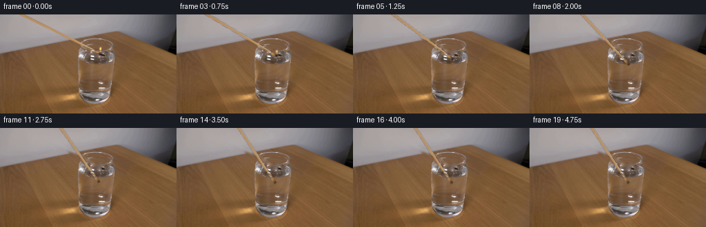
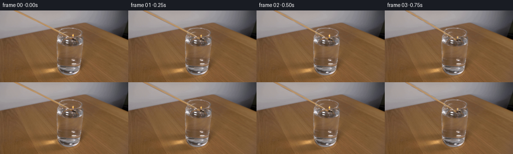
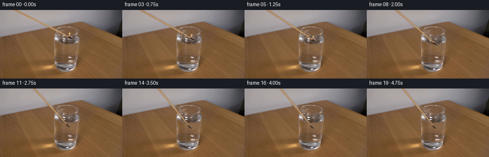
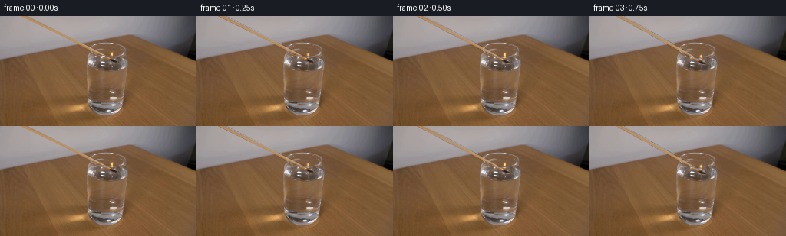
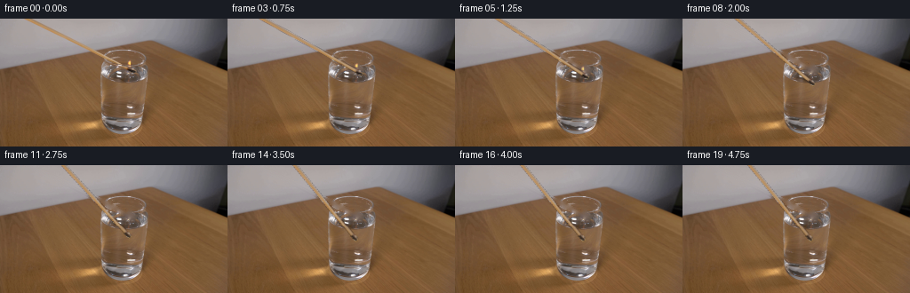

CODING AGENTS AS PIXEL WORLD MODELS
traex/GPT-6.1-Sol · 0109
点击播放 · 原生 RGB 像素
逐轮保存的候选
回放视频、检查图与代码变化。
每份候选均可单独播放。实际图片检查记录在下方工具轨迹中。
候选 01播放与检查图
点击播放 · 原生 RGB 像素


展开代码变化
--- 上一保存版本
+++ 本次保存版本
@@ -0,0 +1,190 @@
+from pathlib import Path
+import numpy as np
+from PIL import Image
+import cv2
+from scipy.ndimage import gaussian_filter
+import artifact_io
+
+ROOT = Path(__file__).resolve().parent
+H, W = 144, 256
+
+
+def smooth(u):
+ u = np.clip(u, 0., 1.)
+ return u*u*(3.-2.*u)
+
+
+def prepare(source):
+ yy, xx = np.mgrid[:H, :W].astype(np.float32)
+ tip = np.array([144.9, 57.55], np.float32)
+ theta = np.arctan2(57.55, 144.9-30.5)
+ v = np.array([np.cos(theta), np.sin(theta)], np.float32)
+ n = np.array([np.sin(theta), -np.cos(theta)], np.float32)
+ s = (xx-tip[0])*v[0] + (yy-tip[1])*v[1]
+ q = (xx-tip[0])*n[0] + (yy-tip[1])*n[1]
+ # Remove only the original moving wooden taper, its soft edge, and fire.
+ mask = ((q > -1.8) & (q < 4.5) & (s < 1.7)).astype(np.uint8)*255
+ flame_remove = ((xx>=142)&(xx<=148)&(yy>=46)&(yy<=55))
+ mask[flame_remove] = 255
+ # End of the dark match head.
+ mask[((xx-144.8)/3.1)**2+((yy-57.3)/2.8)**2 < 1] = 255
+ clean = cv2.inpaint(source, mask, 4, cv2.INPAINT_TELEA).astype(np.float32)
+
+ # A soft, subpixel matte for the photographed, not procedurally recoloured,
+ # shaft. Its length continues above the frame.
+ alpha = smooth((q+1.48)/.77)*smooth((3.72-q)/1.05)
+ alpha *= smooth((1.8-s)/1.15)
+ alpha *= (s < -6.8)
+ # The upper wooden part supplies the natural wood texture and cross-section;
+ # the last few mm are charred and are rebuilt below the glass's reflections.
+ a = np.clip(alpha, 0, 1)
+ fg = (source.astype(np.float32) - clean*(1-a[...,None])) / np.maximum(a[...,None], .05)
+ fg = np.clip(fg, 0, 255)
+ # Fix the very end's foreground colour so the glass highlights do not ride
+ # with the stick: a short burnt zone transitioning to the original dark head.
+ capalpha = smooth((q+1.40)/.7)*smooth((3.30-q)/.90)*smooth((1.3-s)/1.)
+ capalpha *= smooth((s+9.4)/2.1)
+ cap = np.zeros_like(fg)
+ burn = smooth((s+7.0)/7.7)
+ # Source matches the warm wood at the water's edge and dark charred tip.
+ wood = np.array([174,132,84],np.float32)
+ black = np.array([44,30,22],np.float32)
+ cap[:] = wood*(1-burn[...,None])+black*burn[...,None]
+ shade = 1.0 - .10*(q-1.) + .035*np.sin(s*1.31+q*2.1)
+ cap *= shade[...,None]
+ blendcap = smooth((s+9.4)/2.1)
+ fg = fg*(1-blendcap[...,None])+cap*blendcap[...,None]
+ alpha = np.maximum(a, capalpha)
+ fg = np.clip(fg, 0, 255)
+
+ # The source flame's photographed irregularity and colour are retained.
+ af = np.zeros((H,W),np.float32)
+ af[46:56,142:150] = 1
+ # Only fire, no surface highlight or surrounding table, is extracted.
+ excess = np.linalg.norm(source.astype(float)-clean,axis=2)
+ af *= smooth((excess-12)/52)
+ # Separate from the head and use the correct luminous, almost transparent
+ # flame compositing rather than moving a rectangle of background.
+ fire = np.maximum(source.astype(np.float32)-clean, 0)*af[...,None]
+ np.savez_compressed(ROOT/'.tmp'/'prepared.npz', clean=clean, matte=alpha, foreground=fg, fire=fire)
+ Image.fromarray(np.clip(clean,0,255).astype(np.uint8)).save(ROOT/'.tmp'/'clean.png')
+ return clean, fg, alpha, fire, tip, theta, v, n
+
+
+def remap(array, x, y):
+ return cv2.remap(array, x.astype(np.float32), y.astype(np.float32), cv2.INTER_LINEAR,
+ borderMode=cv2.BORDER_REPLICATE)
+
+
+def render(source, prep, t):
+ clean, fg, a, fire, tip0, theta0, v0, n0 = prep
+ y,x=np.mgrid[:H,:W].astype(np.float32)
+ motion=smooth(t/3.20)
+ theta=theta0+(np.deg2rad(57.0)-theta0)*motion
+ tip=np.array([tip0[0]-3.8*motion,tip0[1]+22.3*motion],np.float32)
+ # Tiny hand-induced movement decays as the demonstration comes to rest.
+ tip += np.array([.18*np.sin(t*3.2), .09*np.sin(t*4.3)])*np.sin(np.pi*motion)
+ v=np.array([np.cos(theta),np.sin(theta)],np.float32)
+ n=np.array([np.sin(theta),-np.cos(theta)],np.float32)
+ # The submerged piece is seen through the glass and water. This slight
+ # lateral bending and reduction of contrast are not camera movement.
+ water_y=61.8
+ underwater=smooth((y-water_y)/2.0)
+ refract=1.0*underwater*motion
+ rx=x-refract
+ dist=(rx-tip[0])*v[0]+(y-tip[1])*v[1]
+ cross=(rx-tip[0])*n[0]+(y-tip[1])*n[1]
+ sx=tip0[0]+dist*v0[0]+cross*n0[0]
+ sy=tip0[1]+dist*v0[1]+cross*n0[1]
+ body=remap(fg,sx,sy)
+ matte=remap(a,sx,sy)
+ # Source image cuts the shaft at the top; continue the same wood texture
+ # above its source boundary, so rotation never exposes an artificial end.
+ outsrc=sy<0
+ if np.any(outsrc):
+ syext=np.mod(-sy,22.)+3.
+ sxext=30.5+syext*v0[0]/v0[1]+cross/n0[0]
+ body_ext=remap(fg,sxext,syext)
+ matte_ext=smooth((cross+1.48)/.77)*smooth((3.72-cross)/1.05)
+ body[outsrc]=body_ext[outsrc]
+ matte[outsrc]=matte_ext[outsrc]
+ # Very soft, close shadow in the opening, invisible outside the glass.
+ image=clean.copy()
+ wet=underwater*motion
+ matte *= (1-.25*wet)
+ body = body*(1-.08*wet[...,None]) + np.array([117,91,69])*wet[...,None]*.08
+ image=image*(1-matte[...,None])+body*matte[...,None]
+
+ # Preserve front-surface reflected highlights as a foreground optical layer.
+ lum=clean.mean(axis=2)
+ in_glass=((x-139.)/26.)**2+((y-61.5)/12.)**2<1
+ glints=smooth((lum-150)/90)*in_glass*underwater*.47
+ image=image*(1-glints[...,None])+clean*glints[...,None]
+
+ # Water contact quenches a wooden match immediately; there is no flame
+ # surviving submerged. Airborne fire remains approximately vertical.
+ firepower=1-smooth((tip[1]-60.0)/2.4)
+ if firepower>.001:
+ flicker=1+.13*np.sin(17*t)+.05*np.sin(31*t)
+ height=1+.10*np.sin(14*t+.3)
+ sway=.24*np.sin(18*t)
+ fsx=x-tip[0]+tip0[0]-sway*(tip[1]-y)/9.
+ fsy=(y-tip[1])/height+tip0[1]
+ fl=remap(fire,fsx,fsy)*flicker*firepower
+ # A small physically local amber aureole, no gross scene relighting.
+ aura=np.exp(-((x-tip[0]-.5)**2/9+(y-tip[1]+6)**2/22))
+ image+=aura[...,None]*np.array([2.5,.8,0])*firepower
+ image+=fl
+
+ # Contact makes shallow capillary rings; optical displacement keeps their
+ # appearance tied to the existing real water and reflected environment.
+ contact_time=.95
+ age=t-contact_time
+ if age>=0:
+ if age<2.5:
+ cx=143.8-4.0*smooth(age/2.4)
+ cy=62.1
+ rad=np.sqrt((x-cx)**2+((y-cy)/.31)**2)
+ envelope=((x-139.)/24.)**2+((y-61.5)/8.0)**2
+ boundary=smooth((1-envelope)/.23)
+ dw=np.zeros((H,W),np.float32)
+ ringlight=np.zeros_like(dw)
+ for delay in [0., .44,.88]:
+ tt=age-delay
+ if tt<0:continue
+ radius=2+11.0*tt
+ amp=.25*np.exp(-tt*1.5)*(1-smooth(tt/2.2))
+ d=rad-radius
+ band=np.exp(-(d/1.2)**2)
+ dw+=amp*band*np.sin(d*2.5)
+ ringlight+=amp*band*np.cos(d*2.5)*6
+ dw*=boundary
+ ringlight*=boundary
+ disturbed=remap(image,x,y+dw)
+ image=disturbed+ringlight[...,None]
+ # A faint wisp immediately above the contact point fades very quickly.
+ if age<.9:
+ vapor=np.zeros((H,W),np.float32)
+ for z in np.linspace(0,1,22):
+ px=tip[0]-.5+1.1*np.sin(z*5+age*4)
+ py=water_y-2-age*8-z*(4+age*6)
+ width=.6+z*.8+age*.9
+ vapor += np.exp(-((x-px)/width)**2-((y-py)/1.3)**2)
+ vapor=np.clip(vapor/6,0,1)*.12*np.exp(-age*3.5)
+ image=image*(1-vapor[...,None])+np.array([169,161,154])*vapor[...,None]
+ return np.clip(image+.5,0,255).astype(np.uint8)
+
+
+def main():
+ (ROOT/'.tmp').mkdir(exist_ok=True)
+ source=np.array(Image.open(ROOT/'first_frame.png').convert('RGB'))
+ prep=prepare(source)
+ frames=[source.copy()]
+ for k in range(1,20):
+ frames.append(render(source,prep,k/4.))
+ frames=np.stack(frames).astype(np.uint8)
+ artifact_io.save(frames,ROOT)
+
+
+if __name__=='__main__':
+ main()
候选 02播放与检查图
点击播放 · 原生 RGB 像素


展开代码变化
--- 上一保存版本
+++ 本次保存版本
@@ -16,8 +16,8 @@
def prepare(source):
yy, xx = np.mgrid[:H, :W].astype(np.float32)
- tip = np.array([144.9, 57.55], np.float32)
- theta = np.arctan2(57.55, 144.9-30.5)
+ tip = np.array([150.5, 59.8], np.float32)
+ theta = np.arctan2(59.8, 150.5-30.5)
v = np.array([np.cos(theta), np.sin(theta)], np.float32)
n = np.array([np.sin(theta), -np.cos(theta)], np.float32)
s = (xx-tip[0])*v[0] + (yy-tip[1])*v[1]
@@ -27,35 +27,27 @@
flame_remove = ((xx>=142)&(xx<=148)&(yy>=46)&(yy<=55))
mask[flame_remove] = 255
# End of the dark match head.
- mask[((xx-144.8)/3.1)**2+((yy-57.3)/2.8)**2 < 1] = 255
+ mask[((xx-148.1)/5.6)**2+((yy-58.8)/3.1)**2 < 1] = 255
clean = cv2.inpaint(source, mask, 4, cv2.INPAINT_TELEA).astype(np.float32)
# A soft, subpixel matte for the photographed, not procedurally recoloured,
# shaft. Its length continues above the frame.
alpha = smooth((q+1.48)/.77)*smooth((3.72-q)/1.05)
alpha *= smooth((1.8-s)/1.15)
- alpha *= (s < -6.8)
- # The upper wooden part supplies the natural wood texture and cross-section;
- # the last few mm are charred and are rebuilt below the glass's reflections.
+ alpha *= (s < 1.6)
+ # Recover the foreground by undoing edge mixing with the cleaned plate.
a = np.clip(alpha, 0, 1)
fg = (source.astype(np.float32) - clean*(1-a[...,None])) / np.maximum(a[...,None], .05)
fg = np.clip(fg, 0, 255)
- # Fix the very end's foreground colour so the glass highlights do not ride
- # with the stick: a short burnt zone transitioning to the original dark head.
- capalpha = smooth((q+1.40)/.7)*smooth((3.30-q)/.90)*smooth((1.3-s)/1.)
- capalpha *= smooth((s+9.4)/2.1)
- cap = np.zeros_like(fg)
- burn = smooth((s+7.0)/7.7)
- # Source matches the warm wood at the water's edge and dark charred tip.
- wood = np.array([174,132,84],np.float32)
- black = np.array([44,30,22],np.float32)
- cap[:] = wood*(1-burn[...,None])+black*burn[...,None]
- shade = 1.0 - .10*(q-1.) + .035*np.sin(s*1.31+q*2.1)
- cap *= shade[...,None]
- blendcap = smooth((s+9.4)/2.1)
- fg = fg*(1-blendcap[...,None])+cap*blendcap[...,None]
- alpha = np.maximum(a, capalpha)
- fg = np.clip(fg, 0, 255)
+ # The charred head is wider and irregular, so retain its photographed
+ # silhouette instead of replacing it with a geometrically perfect stick.
+ head = (((xx-148.1)/5.1)**2+((yy-58.5)/2.4)**2 < 1)
+ head &= source.mean(axis=2)<78
+ alpha=np.maximum(a,head.astype(np.float32))
+ fg[head]=source[head]
+ # Bright glass reflections are a separate stationary optical layer.
+ glint=(s>-24)&(s<-13)&(source.mean(axis=2)>171)&(source[:,:,0].astype(float)-source[:,:,2]<40)
+ fg[glint]=np.array([182,146,105],np.float32)
# The source flame's photographed irregularity and colour are retained.
af = np.zeros((H,W),np.float32)
@@ -79,16 +71,16 @@
def render(source, prep, t):
clean, fg, a, fire, tip0, theta0, v0, n0 = prep
y,x=np.mgrid[:H,:W].astype(np.float32)
- motion=smooth(t/3.20)
- theta=theta0+(np.deg2rad(57.0)-theta0)*motion
- tip=np.array([tip0[0]-3.8*motion,tip0[1]+22.3*motion],np.float32)
+ motion=smooth(t/3.60)
+ theta=theta0+(np.deg2rad(51.0)-theta0)*motion
+ tip=np.array([tip0[0]-8.0*motion,tip0[1]+24.0*motion],np.float32)
# Tiny hand-induced movement decays as the demonstration comes to rest.
tip += np.array([.18*np.sin(t*3.2), .09*np.sin(t*4.3)])*np.sin(np.pi*motion)
v=np.array([np.cos(theta),np.sin(theta)],np.float32)
n=np.array([np.sin(theta),-np.cos(theta)],np.float32)
# The submerged piece is seen through the glass and water. This slight
# lateral bending and reduction of contrast are not camera movement.
- water_y=61.8
+ water_y=67.0
underwater=smooth((y-water_y)/2.0)
refract=1.0*underwater*motion
rx=x-refract
@@ -111,7 +103,7 @@
# Very soft, close shadow in the opening, invisible outside the glass.
image=clean.copy()
wet=underwater*motion
- matte *= (1-.25*wet)
+ matte *= (1-.16*wet)
body = body*(1-.08*wet[...,None]) + np.array([117,91,69])*wet[...,None]*.08
image=image*(1-matte[...,None])+body*matte[...,None]
@@ -123,13 +115,16 @@
# Water contact quenches a wooden match immediately; there is no flame
# surviving submerged. Airborne fire remains approximately vertical.
- firepower=1-smooth((tip[1]-60.0)/2.4)
+ firepower=1-smooth((tip[1]-65.7)/2.2)
if firepower>.001:
flicker=1+.13*np.sin(17*t)+.05*np.sin(31*t)
height=1+.10*np.sin(14*t+.3)
sway=.24*np.sin(18*t)
- fsx=x-tip[0]+tip0[0]-sway*(tip[1]-y)/9.
- fsy=(y-tip[1])/height+tip0[1]
+ anchor0=np.array([145.5,55.0],np.float32)
+ offset=anchor0-tip0
+ anchor=tip+v*np.dot(offset,v0)+n*np.dot(offset,n0)
+ fsx=x-anchor[0]+anchor0[0]-sway*(anchor[1]-y)/9.
+ fsy=(y-anchor[1])/height+anchor0[1]
fl=remap(fire,fsx,fsy)*flicker*firepower
# A small physically local amber aureole, no gross scene relighting.
aura=np.exp(-((x-tip[0]-.5)**2/9+(y-tip[1]+6)**2/22))
@@ -138,7 +133,7 @@
# Contact makes shallow capillary rings; optical displacement keeps their
# appearance tied to the existing real water and reflected environment.
- contact_time=.95
+ contact_time=1.15
age=t-contact_time
if age>=0:
if age<2.5:
候选 03播放与检查图
点击播放 · 原生 RGB 像素

展开代码变化
--- 上一保存版本
+++ 本次保存版本
@@ -2,7 +2,6 @@
import numpy as np
from PIL import Image
import cv2
-from scipy.ndimage import gaussian_filter
import artifact_io
ROOT = Path(__file__).resolve().parent
@@ -45,9 +44,16 @@
head &= source.mean(axis=2)<78
alpha=np.maximum(a,head.astype(np.float32))
fg[head]=source[head]
- # Bright glass reflections are a separate stationary optical layer.
- glint=(s>-24)&(s<-13)&(source.mean(axis=2)>171)&(source[:,:,0].astype(float)-source[:,:,2]<40)
- fg[glint]=np.array([182,146,105],np.float32)
+ # Reflections belong to the glass, not to the moving wood. Recover the
+ # material for the last centimetre from the same photographed shaft above
+ # the water, retaining its asymmetric highlight and soft focus.
+ profile_x=tip[0]+(-32.)*v[0]+q*n[0]
+ profile_y=tip[1]+(-32.)*v[1]+q*n[1]
+ material=remap(fg,profile_x,profile_y)
+ replace=smooth((s+24.)/4.)*(1-smooth((s+8.)/3.))
+ texture=(1+.013*np.sin(s*2.4+q*3.)+.009*np.cos(s*4.8))
+ material*=texture[...,None]
+ fg=fg*(1-replace[...,None])+material*replace[...,None]
# The source flame's photographed irregularity and colour are retained.
af = np.zeros((H,W),np.float32)
@@ -58,6 +64,9 @@
# Separate from the head and use the correct luminous, almost transparent
# flame compositing rather than moving a rectangle of background.
fire = np.maximum(source.astype(np.float32)-clean, 0)*af[...,None]
+ # The lower luminous spot is the flame's mirror image on the water. It
+ # should not move rigidly as a second floating flame.
+ fire[53:] *= .25
np.savez_compressed(ROOT/'.tmp'/'prepared.npz', clean=clean, matte=alpha, foreground=fg, fire=fire)
Image.fromarray(np.clip(clean,0,255).astype(np.uint8)).save(ROOT/'.tmp'/'clean.png')
return clean, fg, alpha, fire, tip, theta, v, n
@@ -137,8 +146,8 @@
age=t-contact_time
if age>=0:
if age<2.5:
- cx=143.8-4.0*smooth(age/2.4)
cy=62.1
+ cx=tip[0]+(cy-tip[1])/np.tan(theta)
rad=np.sqrt((x-cx)**2+((y-cy)/.31)**2)
envelope=((x-139.)/24.)**2+((y-61.5)/8.0)**2
boundary=smooth((1-envelope)/.23)
可观测工具轨迹
实际执行的命令与返回图片。
命令 1exit 0
/bin/bash -lc "ls -la && cat prompt.txt && printf '\\n---RULES---\\n' && cat GENERATION_RULES.md"
命令 2exit 0
/bin/bash -lc "cat artifact_io.py && python - <<'PY'
from PIL import Image
import numpy as np
im=np.array(Image.open('first_frame.png'))
print(im.shape)
# coarse color name rendering ascii
small=np.array(Image.fromarray(im).resize((96,54)))
for row in small:
s=''
for r,g,b in row.astype(int):
v=(r+g+b)/3
if r>1.4*g and r>1.4*b and r>80:c='R'
elif r>120 and g>65 and b<g*.65:c='F'
elif max(r,g,b)-min(r,g,b)<25:c=' .:-=+*#%@'[min(9,int(v*10/256))]
elif b>r*1.2:c='B'
elif r>b*1.2:c='s'
else:c='g'
s+=c
print(s)
PY"命令 3exit 0
/bin/bash -lc "python - <<'PY'
from PIL import Image
import numpy as np
im=np.array(Image.open('first_frame.png')).astype(int)
# print chroma and light ascii exact around match
for y in range(0,75):
s=''
for x in range(20,165):
r,g,b=im[y,x];v=(r+g+b)/3
if r>205 and g>130 and b<120:c='F'
elif r>180 and g>80 and b<70:c='f'
elif r>130 and g>65 and b<90:c='s'
elif max(r,g,b)-min(r,g,b)<30:c=' .:-=+*#%@'[min(9,int(v*10/256))]
elif r>b*1.25:c='o'
else:c='?'
s+=c
print(f'{y:02d} {s}')
print('sample match region')
for y in range(25,54,2):
print(y,[(x,im[y,x].tolist()) for x in range(90,121,2)])
PY"命令 4exit 0
/bin/bash -lc "python - <<'PY'
from PIL import Image
import numpy as np
im=np.array(Image.open('first_frame.png')).astype(int)
for y in range(32,75):
s=''
for x in range(108,171):
r,g,b=im[y,x];v=(r+g+b)/3
if r>210 and g>165 and b<150:c='Y'
elif r>190 and g>115 and b<100:c='F'
elif r>165 and g>120 and b<140:c='m'
elif r>120 and g>100 and b<140 and r-b>15:c='o'
elif abs(r-b)<25 and abs(g-b)<25:c=' .:-=+*#%@'[min(9,int(v*10/256))]
elif r>g*1.2 and r>b*1.4:c='s'
else:c='?'
s+=c
print(f'{y:02d} {s}')
# brightest yellow coordinates
m=(im[:,:,0]>190)&(im[:,:,1]>110)&(im[:,:,2]<115)
print('yellow coords', [(int(x),int(y),im[y,x].tolist()) for y,x in np.argwhere(m)])
PY"命令 5exit 0
/bin/bash -lc "python - <<'PY'
import numpy as np
from PIL import Image
im=np.array(Image.open('first_frame.png'))
for y in range(44,58):
print('y',y)
for x in range(126,151):
print(f'{x}:{im[y,x,0]},{im[y,x,1]},{im[y,x,2]}',end=' ')
print()
import cv2,scipy
print('cv2',cv2.__version__)
PY"命令 6exit 0
/bin/bash -lc "python - <<'PY'
from PIL import Image
import numpy as np
im=np.array(Image.open('first_frame.png')).astype(int)
for y in range(28,135):
s=''
for x in range(105,174):
r,g,b=im[y,x];v=(r+g+b)/3
chrom=r-b
if chrom>70:c='W'
elif chrom>50:c='w'
elif chrom>35:c='o'
elif chrom>20:c='c'
else:c=' .:-=+*#%@'[min(9,int(v*10/256))]
s+=c
print(f'{y:03} {s}')
PY"命令 7exit 0
/bin/bash -lc "python - <<'PY'
import numpy as np
from PIL import Image
im=np.array(Image.open('first_frame.png')).astype(float)
for y in range(0,55):
if y<34:
# largest red blue difference in x neighborhood
xs=np.arange(max(0,int(30+2.07*y)-8),min(256,int(30+2.07*y)+10))
else:xs=np.arange(int(30+2.07*y)-5,int(30+2.07*y)+8)
vals=(im[y,xs,0]-im[y,xs,2]); k=vals.argmax();x=xs[k]
print(y, x, im[y,x].astype(int).tolist(),[(int(xs[j]),int(vals[j])) for j in range(len(xs)) if vals[j]>70])
PY"命令 8exit 0
/bin/bash -lc "python - <<'PY'
import numpy as np
from PIL import Image
im=np.array(Image.open('first_frame.png'))
for y in [0,10,20,30,40]:
xc=int(round(30+2.03*y))
print(y,[(x,im[y,x].tolist()) for x in range(xc-7,xc+9)])
PY"命令 9exit 0
/bin/bash -lc "python - <<'PY'
from PIL import Image
import numpy as np
im=np.array(Image.open('first_frame.png'))
for y in range(35,131,3):
print(y, [(x, im[y,x].tolist()) for x in [110,118,125,132,140,148,156,165,174]])
PY"命令 10exit 0
/bin/bash -lc "cat > generate.py <<'PY'
from pathlib import Path
import numpy as np
from PIL import Image
import cv2
from scipy.ndimage import gaussian_filter
import artifact_io
ROOT = Path(__file__).resolve().parent
H, W = 144, 256
def smooth(u):
u = np.clip(u, 0., 1.)
return u*u*(3.-2.*u)
def prepare(source):
yy, xx = np.mgrid[:H, :W].astype(np.float32)
tip = np.array([144.9, 57.55], np.float32)
theta = np.arctan2(57.55, 144.9-30.5)
v = np.array([np.cos(theta), np.sin(theta)], np.float32)
n = np.array([np.sin(theta), -np.cos(theta)], np.float32)
s = (xx-tip[0])*v[0] + (yy-tip[1])*v[1]
q = (xx-tip[0])*n[0] + (yy-tip[1])*n[1]
# Remove only the original moving wooden taper, its soft edge, and fire.
mask = ((q > -1.8) & (q < 4.5) & (s < 1.7)).astype(np.uint8)*255
flame_remove = ((xx>=142)&(xx<=148)&(yy>=46)&(yy<=55))
mask[flame_remove] = 255
# End of the dark match head.
mask[((xx-144.8)/3.1)**2+((yy-57.3)/2.8)**2 < 1] = 255
clean = cv2.inpaint(source, mask, 4, cv2.INPAINT_TELEA).astype(np.float32)
# A soft, subpixel matte for the photographed, not procedurally recoloured,
# shaft. Its length continues above the frame.
alpha = smooth((q+1.48)/.77)*smooth((3.72-q)/1.05)
alpha *= smooth((1.8-s)/1.15)
alpha *= (s < -6.8)
# The upper wooden part supplies the natural wood texture and cross-section;
# the last few mm are charred and are rebuilt below the glass's reflections.
a = np.clip(alpha, 0, 1)
fg = (source.astype(np.float32) - clean*(1-a[...,None])) / np.maximum(a[...,None], .05)
fg = np.clip(fg, 0, 255)
# Fix the very end's foreground colour so the glass highlights do not ride
# with the stick: a short burnt zone transitioning to the original dark head.
capalpha = smooth((q+1.40)/.7)*smooth((3.30-q)/.90)*smooth((1.3-s)/1.)
capalpha *= smooth((s+9.4)/2.1)
cap = np.zeros_like(fg)
burn = smooth((s+7.0)/7.7)
# Source matches the warm wood at the water's edge and dark charred tip.
wood = np.array([174,132,84],np.float32)
black = np.array([44,30,22],np.float32)
cap[:] = wood*(1-burn[...,None])+black*burn[...,None]
shade = 1.0 - .10*(q-1.) + .035*np.sin(s*1.31+q*2.1)
cap *= shade[...,None]
blendcap = smooth((s+9.4)/2.1)
fg = fg*(1-blendcap[...,None])+cap*blendcap[...,None]
alpha = np.maximum(a, capalpha)
fg = np.clip(fg, 0, 255)
# The source flame's photographed irregularity and colour are retained.
af = np.zeros((H,W),np.float32)
af[46:56,142:150] = 1
# Only fire, no surface highlight or surrounding table, is extracted.
excess = np.linalg.norm(source.astype(float)-clean,axis=2)
af *= smooth((excess-12)/52)
# Separate from the head and use the correct luminous, almost transparent
# flame compositing rather than moving a rectangle of background.
fire = np.maximum(source.astype(np.float32)-clean, 0)*af[...,None]
np.savez_compressed(ROOT/'.tmp'/'prepared.npz', clean=clean, matte=alpha, foreground=fg, fire=fire)
Image.fromarray(np.clip(clean,0,255).astype(np.uint8)).save(ROOT/'.tmp'/'clean.png')
return clean, fg, alpha, fire, tip, theta, v, n
def remap(array, x, y):
return cv2.remap(array, x.astype(np.float32), y.astype(np.float32), cv2.INTER_LINEAR,
borderMode=cv2.BORDER_REPLICATE)
def render(source, prep, t):
clean, fg, a, fire, tip0, theta0, v0, n0 = prep
y,x=np.mgrid[:H,:W].astype(np.float32)
motion=smooth(t/3.20)
theta=theta0+(np.deg2rad(57.0)-theta0)*motion
tip=np.array([tip0[0]-3.8*motion,tip0[1]+22.3*motion],np.float32)
# Tiny hand-induced movement decays as the demonstration comes to rest.
tip += np.array([.18*np.sin(t*3.2), .09*np.sin(t*4.3)])*np.sin(np.pi*motion)
v=np.array([np.cos(theta),np.sin(theta)],np.float32)
n=np.array([np.sin(theta),-np.cos(theta)],np.float32)
# The submerged piece is seen through the glass and water. This slight
# lateral bending and reduction of contrast are not camera movement.
water_y=61.8
underwater=smooth((y-water_y)/2.0)
refract=1.0*underwater*motion
rx=x-refract
dist=(rx-tip[0])*v[0]+(y-tip[1])*v[1]
cross=(rx-tip[0])*n[0]+(y-tip[1])*n[1]
sx=tip0[0]+dist*v0[0]+cross*n0[0]
sy=tip0[1]+dist*v0[1]+cross*n0[1]
body=remap(fg,sx,sy)
matte=remap(a,sx,sy)
# Source image cuts the shaft at the top; continue the same wood texture
# above its source boundary, so rotation never exposes an artificial end.
outsrc=sy<0
if np.any(outsrc):
syext=np.mod(-sy,22.)+3.
sxext=30.5+syext*v0[0]/v0[1]+cross/n0[0]
body_ext=remap(fg,sxext,syext)
matte_ext=smooth((cross+1.48)/.77)*smooth((3.72-cross)/1.05)
body[outsrc]=body_ext[outsrc]
matte[outsrc]=matte_ext[outsrc]
# Very soft, close shadow in the opening, invisible outside the glass.
image=clean.copy()
wet=underwater*motion
matte *= (1-.25*wet)
body = body*(1-.08*wet[...,None]) + np.array([117,91,69])*wet[...,None]*.08
image=image*(1-matte[...,None])+body*matte[...,None]
# Preserve front-surface reflected highlights as a foreground optical layer.
lum=clean.mean(axis=2)
in_glass=((x-139.)/26.)**2+((y-61.5)/12.)**2<1
glints=smooth((lum-150)/90)*in_glass*underwater*.47
image=image*(1-glints[...,None])+clean*glints[...,None]
# Water contact quenches a wooden match immediately; there is no flame
# surviving submerged. Airborne fire remains approximately vertical.
firepower=1-smooth((tip[1]-60.0)/2.4)
if firepower>.001:
flicker=1+.13*np.sin(17*t)+.05*np.sin(31*t)
height=1+.10*np.sin(14*t+.3)
sway=.24*np.sin(18*t)
fsx=x-tip[0]+tip0[0]-sway*(tip[1]-y)/9.
fsy=(y-tip[1])/height+tip0[1]
fl=remap(fire,fsx,fsy)*flicker*firepower
# A small physically local amber aureole, no gross scene relighting.
aura=np.exp(-((x-tip[0]-.5)**2/9+(y-tip[1]+6)**2/22))
image+=aura[...,None]*np.array([2.5,.8,0])*firepower
image+=fl
# Contact makes shallow capillary rings; optical displacement keeps their
# appearance tied to the existing real water and reflected environment.
contact_time=.95
age=t-contact_time
if age>=0:
if age<2.5:
cx=143.8-4.0*smooth(age/2.4)
cy=62.1
rad=np.sqrt((x-cx)**2+((y-cy)/.31)**2)
envelope=((x-139.)/24.)**2+((y-61.5)/8.0)**2
boundary=smooth((1-envelope)/.23)
dw=np.zeros((H,W),np.float32)
ringlight=np.zeros_like(dw)
for delay in [0., .44,.88]:
tt=age-delay
if tt<0:continue
radius=2+11.0*tt
amp=.25*np.exp(-tt*1.5)*(1-smooth(tt/2.2))
d=rad-radius
band=np.exp(-(d/1.2)**2)
dw+=amp*band*np.sin(d*2.5)
ringlight+=amp*band*np.cos(d*2.5)*6
dw*=boundary
ringlight*=boundary
disturbed=remap(image,x,y+dw)
image=disturbed+ringlight[...,None]
# A faint wisp immediately above the contact point fades very quickly.
if age<.9:
vapor=np.zeros((H,W),np.float32)
for z in np.linspace(0,1,22):
px=tip[0]-.5+1.1*np.sin(z*5+age*4)
py=water_y-2-age*8-z*(4+age*6)
width=.6+z*.8+age*.9
vapor += np.exp(-((x-px)/width)**2-((y-py)/1.3)**2)
vapor=np.clip(vapor/6,0,1)*.12*np.exp(-age*3.5)
image=image*(1-vapor[...,None])+np.array([169,161,154])*vapor[...,None]
return np.clip(image+.5,0,255).astype(np.uint8)
def main():
(ROOT/'.tmp').mkdir(exist_ok=True)
source=np.array(Image.open(ROOT/'first_frame.png').convert('RGB'))
prep=prepare(source)
frames=[source.copy()]
for k in range(1,20):
frames.append(render(source,prep,k/4.))
frames=np.stack(frames).astype(np.uint8)
artifact_io.save(frames,ROOT)
if __name__=='__main__':
main()
PY
python generate.py"命令 11exit 0
/bin/bash -lc "python - <<'PY'
from PIL import Image
import numpy as np
orig=np.array(Image.open('first_frame.png')).astype(int)
clean=np.array(Image.open('.tmp/clean.png')).astype(int)
for f in [1,4,8,13,19]:
a=np.array(Image.open(f'frames/{f:02}.png')).astype(int)
print('\\nFRAME',f)
for y in range(0,95,2):
s=''
for x in range(15,175):
r,g,b=a[y,x];v=(r+g+b)/3
if r>210 and g>140 and b<140:c='F'
elif r>155 and (r-b)>80:c='M'
elif r<65 and g<55 and b<40:c='C'
elif r-b>40:c='w'
elif r-b>15:c='o'
else:c=' .:-=+*#%@'[min(9,int(v*10/256))]
s+=c
print(f'{y:02} {s}')
print('delta pixels',np.sum(np.any(a"'!=orig,axis=2)))
# changes in clean outside object'"'s mask and removed zone statistics
print('first identical',np.array_equal(orig,np.array(Image.open('frames/00.png'))))
PY"命令 12exit 0
/bin/bash -lc "python - <<'PY'
import numpy as np
from PIL import Image
import generate
im=np.array(Image.open('first_frame.png'))
p=generate.prepare(im)
r=generate.render(im,p,0)
print('recon stats',np.abs(im.astype(int)-r.astype(int)).mean(),np.max(np.abs(im.astype(int)-r.astype(int))))
for y in [48,50,52,54,56,57,58,59,60]:
print(y,[(x,im[y,x].tolist(),r[y,x].tolist()) for x in range(134,148,2)])
for f in [0,1,2,3,4,8,13]:
a=np.array(Image.open(f'frames/{f:02}.png'))
print('\\n',f)
for y in range(42,85):
s=''
for x in range(116,158):
r,g,b=a[y,x].astype(int)
if r>205 and g>130 and b<140:c='F'
elif r>155 and r-b>80:c='M'
elif r<75 and g<60 and b<50:c='c'
elif r-b>50:c='w'
elif r-b>30:c='o'
elif r-b>15:c=':'
else:c=' .-=+*#%@'[min(8,int((r+g+b)*9/3/256))]
s+=c
print(f'{y:2} '+s)
PY"命令 13exit 0
/bin/bash -lc "python - <<'PY'
import generate,numpy as np
from PIL import Image
p=generate.prepare(np.array(Image.open('first_frame.png')))
for y in [49,50,51,52,53,54,55,56,57,58,59]:
print(y,[(x, round(float(p[2][y,x]),2),p[1][y,x].astype(int).tolist()) for x in range(132,150) if p[2][y,x]>.6])
PY"命令 14exit 0
/bin/bash -lc "python - <<'PY'
from PIL import Image
import numpy as np
im=np.array(Image.open('first_frame.png'))
for y in range(54,64):
print(y,[(x,im[y,x].tolist()) for x in range(142,154)])
PY"命令 15exit 0
/bin/bash -lc "python - <<'PY'
p='generate.py'
s=open(p).read().replace('tip = np.array([144.9, 57.55], np.float32)','tip = np.array([150.5, 59.8], np.float32)').replace('theta = np.arctan2(57.55, 144.9-30.5)','theta = np.arctan2(59.8, 150.5-30.5)')
s=s.replace(\"mask[((xx-144.8)/3.1)**2+((yy-57.3)/2.8)**2 < 1] = 255\", \"mask[((xx-148.1)/5.6)**2+((yy-58.8)/3.1)**2 < 1] = 255\")
start=s.index(' # The upper wooden part supplies')
end=s.index(\" # The source flame\",start)
s=s[:start]+''' # Recover the foreground by undoing edge mixing with the cleaned plate.
a = np.clip(alpha, 0, 1)
fg = (source.astype(np.float32) - clean*(1-a[...,None])) / np.maximum(a[...,None], .05)
fg = np.clip(fg, 0, 255)
# The charred head is wider and irregular, so retain its photographed
# silhouette instead of replacing it with a geometrically perfect stick.
head = (((xx-148.1)/5.1)**2+((yy-58.5)/2.4)**2 < 1)
head &= source.mean(axis=2)<78
alpha=np.maximum(a,head.astype(np.float32))
fg[head]=source[head]
# Bright glass reflections are a separate stationary optical layer.
glint=(s>-24)&(s<-13)&(source.mean(axis=2)>171)&(source[:,:,0].astype(float)-source[:,:,2]<40)
fg[glint]=np.array([182,146,105],np.float32)
'''+s[end:]
s=s.replace('alpha *= (s < -6.8)','alpha *= (s < 1.6)')
s=s.replace('motion=smooth(t/3.20)','motion=smooth(t/3.60)')
s=s.replace('np.deg2rad(57.0)','np.deg2rad(51.0)')
s=s.replace('tip0[0]-3.8*motion,tip0[1]+22.3*motion','tip0[0]-8.0*motion,tip0[1]+24.0*motion')
s=s.replace('water_y=61.8','water_y=67.0')
s=s.replace('matte *= (1-.25*wet)','matte *= (1-.16*wet)')
s=s.replace('firepower=1-smooth((tip[1]-60.0)/2.4)','firepower=1-smooth((tip[1]-65.7)/2.2)')
s=s.replace(' fsx=x-tip[0]+tip0[0]-sway*(tip[1]-y)/9.\\n fsy=(y-tip[1])/height+tip0[1]',''' anchor0=np.array([145.5,55.0],np.float32)
offset=anchor0-tip0
anchor=tip+v*np.dot(offset,v0)+n*np.dot(offset,n0)
fsx=x-anchor[0]+anchor0[0]-sway*(anchor[1]-y)/9.
fsy=(y-anchor[1])/height+anchor0[1]''')
s=s.replace('contact_time=.95','contact_time=1.15')
open(p,'w').write(s)
PY
python generate.py
python - <<'PY'
from PIL import Image
import numpy as np
import generate
im=np.array(Image.open('first_frame.png'))
p=generate.prepare(im)
print('fire max',p[3].max())
for f in [1,4,8,14]:
a=np.array(Image.open(f'frames/{f:02}.png'))
print('FRAME',f)
for y in range(50,90):
s=''
for x in range(120,157):
r,g,b=a[y,x].astype(int)
if r>205 and g>135 and b<140:c='F'
elif r>160 and r-b>80:c='M'
elif r<65 and g<55 and b<45:c='C'
elif r-b>50:c='w'
elif r-b>25:c='o'
elif r-b>15:c=':'
else:c=' .-=+*#%@'[min(8,int((r+g+b)*9/3/256))]
s+=c
print(f'{y:2} '+s)
PY"命令 16exit 0
/bin/bash -lc "python - <<'PY'
p='generate.py';s=open(p).read();start=s.index(' # Bright glass reflections');end=s.index(' # The source flame',start)
s=s[:start]+''' # Reflections belong to the glass, not to the moving wood. Recover the
# material for the last centimetre from the same photographed shaft above
# the water, retaining its asymmetric highlight and soft focus.
profile_x=tip[0]+(-32.)*v[0]+q*n[0]
profile_y=tip[1]+(-32.)*v[1]+q*n[1]
material=remap(fg,profile_x,profile_y)
replace=smooth((s+24.)/4.)*(1-smooth((s+8.)/3.))
texture=(1+.013*np.sin(s*2.4+q*3.)+.009*np.cos(s*4.8))
material*=texture[...,None]
fg=fg*(1-replace[...,None])+material*replace[...,None]
'''+s[end:]
s=s.replace(' cx=143.8-4.0*smooth(age/2.4)\\n cy=62.1',' cy=62.1\\n cx=tip[0]+(cy-tip[1])/np.tan(theta)')
s=s.replace('fire = np.maximum(source.astype(np.float32)-clean, 0)*af[...,None]', '''fire = np.maximum(source.astype(np.float32)-clean, 0)*af[...,None]
# The lower luminous spot is the flame's mirror image on the water. It
# should not move rigidly as a second floating flame.
fire[53:] *= .25''')
s=s.replace('from scipy.ndimage import gaussian_filter\\n','')
open(p,'w').write(s)
PY
python generate.py
python - <<'PY'
from PIL import Image
import numpy as np
import os
f=np.stack([np.array(Image.open(f'frames/{k:02d}.png')) for k in range(20)])
assert f.shape==(20,144,256,3) and f.dtype==np.uint8
assert np.array_equal(f[0],np.array(Image.open('first_frame.png')))
x=np.load('pixels.npz')['pixels'];assert x.shape==(144,256,20)
print('Validated frames and artifact:',f.shape,'RGB', f.dtype)
print('Motion per frame:',[round(float(np.mean(np.abs(f[k].astype(float)-f[k-1]))),3) for k in range(1,20)])
print('Artifacts:',[(p,os.path.getsize(p)) for p in ['generate.py','pixels.npz','index.html']])
PY"保存候选 3 份；完成命令 16 次；可验证图片返回 0 张。原始 API 响应与完整日志保留在本地。